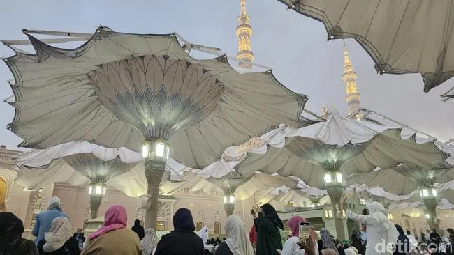

1. Fenomena Travel Umroh Bodong & Pentingnya Kewaspadaan
Niat suci untuk beribadah ke Tanah Suci Makkah dan Madinah harus diimbangi dengan kehati-hatian dalam memilih penyelenggara ibadah. Dalam beberapa tahun terakhir, masih terdapat oknum biro travel tidak bertanggung jawab yang menawarkan harga promo umroh di luar akal sehat, namun berujung pada penundaan keberangkatan secara sepihak atau bahkan kegagalan berangkat.
Oleh karena itu, setiap calon jamaah dan keluarga wajib dibekali pemahaman komprehensif dalam menyaring biro perjalanan ibadah umrah (PPIU) yang benar-benar resmi, profesional, dan amanah.
2. Memahami Rumus 5 Pasti Umroh Kemenag RI
Kementerian Agama Republik Indonesia (Kemenag RI) telah mengeluarkan slogan dan standar perlindungan jamaah yang dikenal dengan istilah "5 Pasti Umroh". Sebelum menyetorkan uang muka (DP), pastikan 5 hal pokok berikut terkonfirmasi:
- Pasti Travelnya: Pastikan biro travel memiliki izin PPIU aktif dari Kementerian Agama RI.
- Pasti Jadwalnya: Memiliki kepastian tanggal keberangkatan dan kepulangan serta nomor penerbangan pesawat.
- Pasti Visanya: Kepastian pengurusan Visa Umroh resmi dari Pemerintah Arab Saudi.
- Pasti Hotelnya: Nama hotel, kelas bintang, dan konfirmasi reservasi kamar di Makkah & Madinah.
- Pasti Harganya: Rincian harga jelas tanpa adanya biaya tersembunyi (hidden fees) mendadak.

3. Tip 1: Cek Legalitas & Nomor Izin PPIU Resmi
Ciri paling utama dari travel umroh terpercaya adalah memiliki legalitas usaha yang sah. Biro travel wajib mengantongi izin sebagai Penyelenggara Perjalanan Ibadah Umrah (PPIU) dari Kemenag RI.
Anda dapat secara mandiri mengecek status keaktifan izin travel melalui portal resmi Kemenag RI (aplikasi SIMPUH atau Umrah Cerdas). Sebagai contoh, PT AS-SIDDIQ Tour & Travel beroperasi resmi dengan Izin PPIU Kemenag RI No. 412/2021.
4. Tip 2: Pastikan Kepastian Tiket Pesawat & Direct Flight
Travel umroh profesional selalu memesan tiket penerbangan jauh-jauh hari sebelum mempublikasikan jadwal keberangkatan. Mintalah informasi mengenai maskapai penerbangan yang digunakan (seperti Saudi Arabian Airlines, Garuda Indonesia, atau Lion Air) serta kode booking penerbangan.
5. Tip 3: Cek Kejelasan Nama & Jarak Hotel ke Masjidil Haram
Akomodasi hotel menentukan tingkat kenyamanan dan kemudahan jamaah dalam beribadah harian ke Masjidil Haram Makkah maupun Masjid Nabawi Madinah. Tanyakan secara spesifik nama hotel dan jaraknya ke pelataran masjid.
6. Tip 4: Waspadai Biaya Paket yang Terlalu Murah Unrasional
Pemerintah Indonesia melalui Kemenag menetapkan Standar Pelayanan Minimal (SPM) dan acuan Referensi Biaya Umroh Rasional (sekitar Rp 26 juta - Rp 30 juta untuk kelas reguler). Jika ada pihak menawarkan paket umroh di bawah Rp 20 juta dengan janji hotel bintang 5, Anda patut curiga.
7. Tip 5: Evaluasi Pengalaman & Track Record Travel
Pilihlah biro umroh yang sudah berpengalaman melayani keberangkatan jamaah selama bertahun-tahun. Periksa ulasan jamaah di Google Maps, testimonial video keberangkatan, serta dokumentasi galeri kegiatan ibadah jamaah sebelumnya.
8. Tip 6: Perhatikan Rekomendasi Pembimbing Ibadah (Mutawwif)
Pelaksanaan ibadah umroh membutuhkan bimbingan fikih manasik yang sesuai dengan Al-Qur'an dan Sunnah shahihah. Pastikan travel menyediakan Ustadz pembimbing (Mutawwif) lulusan pesantren atau universitas Islam terkemuka yang sabar dan kompeten membimbing jamaah dari awal hingga akhir.
9. Tip 7: Kehadiran Kantor Fisik & Kemudahan Layanan Customer Service
Kunjungilah kantor fisik travel untuk melakukan pendaftaran dan konsultasi langsung. Kantor fisik yang jelas membuktikan keseriusan manajemen operasional dalam melayani masyarakat secara transparan.
10. Kesimpulan & Solusi Keberangkatan Aman
Dengan menerapkan 7 tips di atas, Anda dan keluarga dapat terhindar dari risiko penipuan serta dapat beribadah di Tanah Suci dengan penuh rasa tenang, aman, dan khusyuk.
AS-SIDDIQ Travel siap melayani perjalanan ibadah Umroh & Haji Anda dengan jaminan izin resmi PPIU Kemenag RI, maskapai penerbangan terkemuka, akomodasi hotel bintang 5, serta pembimbing ibadah berpengalaman.